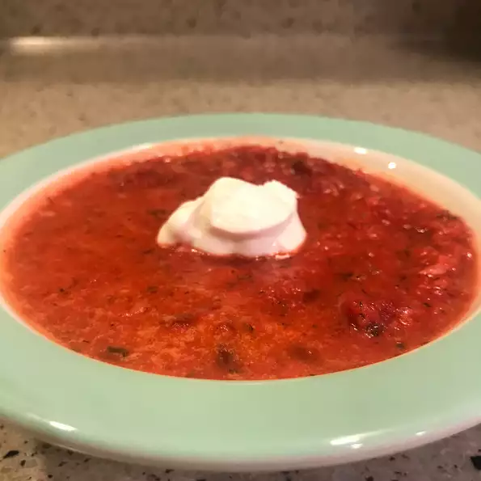

Borsch

Description
This is the best borsch I have ever eaten. Double the recipe, because it freezes well.
Ingredients
- 6 cups water
- ¾ tablespoon salt
- ½ cup finely chopped carrots
- ¼ cup chopped green bell pepper, divided
- ½ stalk celery, chopped
- 1 medium beet
- ½ cup canned peeled and diced tomatoes
- 3 potatoes, quartered
- ⅓ cup butter
- ½ cup chopped onion
- 1½ cups canned tomatoes
- 3 cups finely shredded cabbage, divided
- ¼ cup heavy cream
- ¾ cup diced potatoes
- 1 tablespoon dried dill weed
- ¼ teaspoon ground black pepper to taste
- salt and freshly ground black pepper to taste